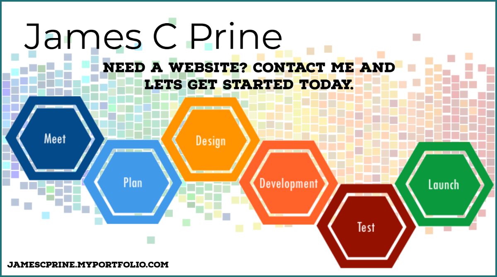

Front-End Engineering
Semantic HTML5, modern CSS (Grid, Flexbox, custom properties), and JavaScript enhancements that keep interfaces performant and accessible.
- Component-based architecture
- Responsive design systems
- Accessibility (WCAG 2.1)
Front-End Developer & UI Designer
I craft fast, accessible digital experiences that support business goals and delight users. I’m ready to join a collaborative team where thoughtful design and clean code matter.
I’m a multidisciplinary front-end developer with a love for crisp UI, inclusive UX, and collaborative delivery. My background spans web design, branding, and custom WordPress builds for local businesses and community groups.
Colleagues know me for pairing design empathy with technical rigor. I prototype in Figma, translate concepts into responsive layouts, and iterate quickly with accessibility-first HTML, modern CSS, and lightweight JavaScript.
Semantic HTML5, modern CSS (Grid, Flexbox, custom properties), and JavaScript enhancements that keep interfaces performant and accessible.
Brand storytelling backed by pixel-perfect visuals. From mood boards to interactive prototypes, I translate ideas into launch-ready assets.
Partnering with stakeholders, marketing teams, and developers to ship features on time while maintaining craftsmanship and quality.
Deliver bespoke sites for small businesses, local nonprofits, and creative professionals. Lead UX discovery, branding, and development from kickoff through launch.
Owned brand identity and digital presence for a family of hospitality venues. Led redesign of the flagship Bistro Café site and produced integrated marketing campaigns.
Real-world examples of how I connect user goals with business outcomes.

Rebranded a local community farm experience with a modular design system, updated color palette, and streamlined CSA sign-up flow.
Explore the projectCrafted an inviting restaurant site featuring seasonal menus, chef spotlights, and easy reservation handoffs to boost foot traffic.
Explore the projectReady to add a front-end specialist to your team? I’m available for full-time roles and select freelance engagements.